ТЕМА 3. Інтегральні мікросхеми (ІМС)
1. Загальні відомості.
1.1. Особливості інтегральних схем (ІС).
1.2. Основні терміни і напрямки розвитку.
2. Класифікація ІМС.
3. Система умовних позначень ІМС.
4. Аналогові інтегральні мікросхеми.
4.1. Операційні підсилювачі.
5. Цифрові інтегральні схеми.
5.1. Класифікація ЦІС.
6. Застосування інтегральних мікросхем.
1. Загальні відомості
Розвиток електроніки визначається постійним вдосконаленням характеристик елементної бази і апаратури в наступних напрямках:
– зменшення габаритів і маси (мініатюризація);
– підвищення надійності за рахунок скорочення сполучних ліній, вдосконалення контактних вузлів і взаємного резервування елементів;
– зменшення потужності, що споживається;
– ускладнення завдань і відповідних їм схемних рішень при одночасному здешевленні кожного окремого елементу.
Істотні зміни в напівпровідниковій техніці зв'язані з:
– переходом до інтегральних мікросхем (ІМС);
– переходом до великих інтегральних схем (ВІС).
Інтегральною називають мікросхему з певним функціональним призначенням, що виготовляється не збіркою і розпайкою окремих активних і пасивних елементів, а цілком, в єдиному технологічному процесі.
Прикладами інтегральних схем можуть служити підсилювачі різних сигналів, логічні схеми обчислювальної техніки, генератори синусоїдної, імпульсної або пилкоподібної напруги, тригери виготовлені як єдине ціле в об'ємі одного напівпровідникового кристала або в тонких плівках. Ці схеми зазвичай доповнюють навісними компонентами.


До пасивних елементів електронних схем відносять резистори, конденсатори, індуктивні котушки, трансформатори, до активних — діоди, транзистори, тиристори і ін. Інтегральні мікросхеми містять десятки і сотні пасивних і активних елементів. Показник ступеня складності мікросхеми характеризується числом елементів, що містяться в ній, і компонентів. Великі інтегральні схеми також виготовляють в об'ємі одного кристала. Вони характеризуються більшою складністю і служать як окремі блоки електронної апаратури, наприклад, запам'ятовуючі пристрої, процесора і т.д. Оскільки ІС, так само як і електроні лампи або транзистори, являють собою конструктивно одне ціле, виконують певну функцію і повинні задовольняти певні вимоги при випробуваннях, постачанні та експлуатації то вони відносяться до розряду електронних приладів (ЕП).
1.1 Особливості інтегральних схем (ІС)
Однак в порівнянні з діодами, транзисторами і т.п. ІС є якісно новим типом приладу.
Перше – головна особливість як ЕП полягає в тому, що вона самостійно виконує закінчену, часто дуже складну функцію, тоді як елементарні (дискретні) ЕП виконують аналогічну функцію тільки в поєднанні з іншими компонентами.
Другою важливою особливістю ІС є те, що підвищення функціональної складності цього приладу в порівнянні з дискретними не супроводжується погіршенням якого-небудь із основних показників (надійність, вартість і т.п.) Більше того, всі ці показники покращуються.
Третя особливість ІС заключається в перевазі активних елементів над пасивними – принцип, діаметрально протилежний тому, який притаманний дискретній транзисторній техніці. В останній активні елементи особливо транзистори, найбільш дорогі, і тому оптимізація схеми при інших умовах досягається шляхом зменшення кількості активних компонентів. В ІС задається вартість не елемента, а
кристала, тому доцільно розміщувати на кристалі якомога більше елементів з мінімальною площею. Мінімальну площу мають активні елементи – транзистори, діоди, а максимальну – пасивні.
Четверта особливість ІС пов’язана з тим, що суміжні елементи знаходяться один від одного на відстані 50-100 мкм. На таких малих відстанях різниця електрофізичних властивостей матеріалу малоймовірна, а відтак, малоймовірним є значний розкид параметрів у суміжних елементів. Параметри суміжних елементів взаємопов’язані – корельовані.
1.2. Основні терміни і напрямки розвитку
Мікроелектроніка – галузь електроніки, яка охоплює проблеми і задачі розробки, конструювання, виготовлення і застосування ікроелектронних виробів. Мікроелектронними називаються вироби з високим ступенем мініатюризації.ІМС, або ІС – мікроелектронний виріб з високою щільністю пакування електрично з’єднаних елементів або елементів і компонентів, який виконує певну функцію перетворення і обробки електричних сигналів і з точки зору конструктивно-технологічних і експлуатаційних вимог розглядається як одне ціле. Елемент ІМС – частина ІМС (наприклад транзистор, діод, конденсатор), який не відокремлений від кристала або основи не може розглядатись як самостійний виріб. Компонент, який є частиною ІМС і який реалізує функцію якого-небудь електрорадіоелемента, можна виділити як самостійний виріб (наприклад, мініатюрний резистор у гібридній ІС).
Розвиток мікроелектроніки в даний час йде в трьох напрямах (рис. 1).
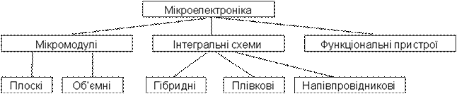
Рис. 1. Основні напрямки мікроелектроніки
2. Класифікація ІМС
За принципами будови та технології виготовлення ІМС поділяються на такі основні типи:
– напівпровідникові;
– плівкові;
– поєднані;
– гібридні.
Напівпровідниковою інтегральною мікросхемою називають ІМС, яка має один кристал напівпровідника, в об’ємі і на поверхні якого спеціальними технологічними методами виконані всі елементи, міжелементні з’єднання і контактні площинки мікросхеми.
Кристал напівпровідника являє собою частину напівпровідникової пластини(заготівки із напівпровідникового матеріалу), яка використовується для виготовлення напівпровідникових інтегральних мікросхем.
Плівкова ІМС – це мікросхема, елементи якої виконані за допомогою різного типу плівок на поверхні діелектричної підкладки. В залежності від способу формування плівок і пов’язаною з цим їх товщиною розрізняють тонкоплівкові ІС (товщина плівок 1-2 мкм ) та товстоплівкові ІС (товщина плівок від 2-20 мкм і більше). Ця технологія не дозволяє одержати активні елементи із задовільними параметрами, а тому плівкові ІС містять в собі тільки пасивні елементи (резистори, конденсатори).
В поєднаних ІМС активні елементи виконані в поверхневому шарі напівпровідникового кристалу (як в напівпровідниковій ІС), а пасивні нанесені за допомогою плівок на попередньо ізольовану поверхню того ж кристалу. Гібридною інтегральною мікросхемою називають ІМС, яка має діелектричну основу, пасивні елементи (R,C,L) на її поверхні виконують у вигляді одношарових або багатошарових плівкових структур, з’єднаних нерозривними плівковими провідниками, а напівпровідникові прилади (активні елементи), в тому числі ІМС та інші компоненти (мініатюрні конденсатори, резистори і індуктивності великих номіналів) розміщені на основі у вигляді дискретних навісних деталей.
До числа гібридних відносять також мікросхеми, які складаються з кількох кристалів, з’єднаних між собою і змонтованих в одному корпусі (багатокристальні ІМС).
Зібрану гібридну мікросхему укладають в металевий або пластмасовий корпус, що ізолює її від зовнішніх факторів (волога, пилюка і ін.). Розміри корпусу складають одиниці або десятки міліметрів. Контактні виводи розмішають у визначеному порядку, а корпус нерідко має зріз або виступ для забезпечення орієнтування при монтажі.
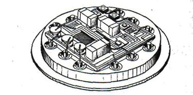
Рис. 2. Гібридна інтегральна мікросхема
Мікрозбіркою називають мікроелектронні вироби, які складають з елементів, компонентів, ІМС та інших електрорадіоелементів, з’єднаних між собою певним способом для виконання певної функції, і розробляються конструкторами конкретної радіоелектронної апаратури, щоб покращити показники її в мініатюризації. Із мікрозбірок компонують мікроблоки.
Мікроблок – мікроелектронний виріб, який, крім мікрозбірок, може також мати ІМС та інші компоненти у різних поєднаннях.
За характером функцій, що виконуються, ІМС поділяються на дві категорії:
– аналогові;
– та цифрові.
Аналогові ІМС виконують функції перетворення і обробки електричних сигналів, які змінюються за законом неперервної функції. Вони застосовуються як підсилювачі, генератори гармонічних сигналів, детектори, фільтри. Цифрові ІМС призначені для обробки і перетворення електричних сигналів, які змінюються за законом дискретної функції.
Активні елементи в таких ІМС працюють в ключовому режимі і забезпечують два стани схем:
– відкрито;
– закрито.
Окремим випадком цифрових ІМС є логічна мікросхема. ІМС розробляються і виготовляються у вигляді серій. Серія ІМС – сукупність типів ІС, які виконують різні функції, але мають єдину конструктивно-технологічну будову і призначені для спільного застосування в радіоелектронній апаратурі. Всі ІМС однієї серії мають, як правило, однаковий корпус (133 серія, 155).
Корпус ІМС – частина конструкції ІМС, яка захищає кристал або основу, а також елементи і компоненти мікросхеми від зовнішнього впливу і забезпечує з’єднання ІМС із зовнішніми електричними колами за допомогою виводів. Кількісно рівень розвитку інтегральної техніки визначається показником, який називається рівнем інтеграції. Він являє собою сумарне число елементів і компонентів N, які знаходяться в ІМС. Часто також користуються поняттям густота упакування ІМС в одиниці об’єму – відношення числа елементів і компонентів мікросхеми до її об’єму без урахування об’єму виводів.
Ступінь складності ІМС характеризують коефіцієнтом К, який називають ступенем інтеграції і визначають за формулою К= Lg N. При цьому ІМС з числом елементів до 10 – це мікросхеми 1-го ступеня інтеграції, з числом від 11 до 100 –2-го ступеня, з числом 101 до 1000, від 1001 до 10000, від 10001 до 100000 належить до ІМС 3-го, 4-го і 5 –го ступенів інтеграції. При обчисленні К його заокруглюють до найближчого більшого цілого числа. ІМС з високим ступенем інтеграції К= 3…5 належать до групи великих інтегральних мікросхем (ВІС) і при К >5 – надвеликих мікросхем (НВІС).
Мікропроцесор Intel 80486DX2
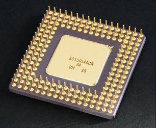
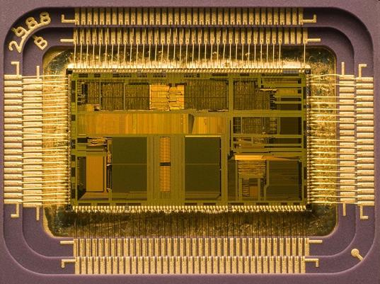
Схема 4-бітного АЛП 74181
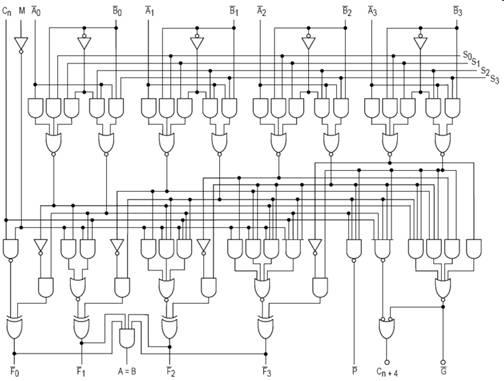
3. Система умовних позначень ІМС
Інтегральні мікросхеми поділяються за функціональними ознаками на підгрупи і види. Кожна підгрупа і вид мають відповідне буквене позначення. Вони представлені у довідниках по інтегральним схемам.
Наприклад, підгрупа формувачів імпульсів має буквене позначення “А”, а окремий вид – друге позначення (для формувачів імпульсів прямокутної форми – “Г” і одержуємо буквене позначення типономіналу “АГ”).
Генератори “Г”, гармонійних сигналів (“С”) – ГС, схеми вторинних джерел живлення “Е”, стабілізатори напруги “Н” – ЕН, елементи арифметичних і дискретних пристроїв “І”, регістри “Р”–ІР, логічні елементи “Л”, елемент ”НІ” – ЛН, ”АБО” – ЛЛ, ”І-АБО” – ЛС.
Повне умовне позначення ІМС складається з чотирьох елементів.
К 1 55 Л Л 7
К 1 42 Е Н 4
1 2 3 4
Перший елемент (одна цифра) відображає класифікацію ІМС за конструктивно-технологічними ознаками: 1,5,7 – напівпровідникові; 2,4,6,8 – гібридні; 3- інші. Другий елемент (дві цифри) – це порядковий номер розробки, якого набуває дана серія ІМС, в сукупності перші два елементи у вигляді цифр визначають повний номер серії (155 серія, 710 серія). Третій елемент складається з двох букв, які відображають підгрупу і вид ІМС (ГС, ЕН, ІР…).
Четвертий елемент - цифра, яка означає порядковий номер розробки конкретної мікросхеми за функціональною ознакою в даній серії. Наприклад, мікросхема 140УД7 - інтегральний напівпровідниковий операційний підсилювач (УД) з порядковим номером розробки серії 40, серії 140, з порядковим номером розробки даної схеми в серії за функціональною ознакою 7.
В умовних позначеннях ІМС широкого застосування на початку позначення ставиться буква К. Після цієї букви може бути також приведене умовне позначення корпуса мікросхеми (пластмасовий –П, керамічний –І). Буква Б відповідає безкорпусному варіанту ІМС.
В умовних позначеннях безкорпусних ІМС вводиться через дефіс цифра, яка характеризує конструктивні особливості мікросхеми : 1 – з гнучкими виводами; 2 – з павуковими; 3 – з жорстким; 4 – нерозділені на пластині; 5 – розділені без втрати орієнтації; 6 – без виводів.
Умовне графічне зображення ІМС приведено на рис. 3.
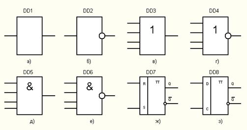
Рис. 3. Умовне графічне зображення інтегральних мікросхем:
а) буфер; б) інвертор; в) елемент АБО, г) елемент АБО-НІ; д) елемент І; е) елемент І-НІ; ж) R-S тригер; з) синхронний D-тригер
Для цифрових ІМС введені такі параметри, як напруга логічної одиниці – ”1”, та логічного нуля – ”0”. Логічна одиниця — це високий потенціал, а логічний нуль — низький потенціал для позитивної логіки і, навпаки, для зворотної логіки.
4. Аналогові інтегральні мікросхеми
Аналогові інтегральні мікросхеми (АІМ) універсальні і багатофункціональні. До таких схем належать операційні підсилювачі, інтегральні стабілізатори, компоратори та інші схеми, які складаються з базових схемотехнічних елементів, наприклад, елементарних підсилювальних каскадів, диференційних підсилювачів, каскадів зсуву потенціальних рівнів, генераторів стабільного струму, опорних
елементів, кінцевих підсилювачів каскадів.
4.1. Операційні підсилювачі
Операційним підсилювачем (ОП) називається підсилювач постійного струму з великим коефіцієнтом підсилення, який виготовляється у вигляді інтегральної мікросхеми (рис.4).
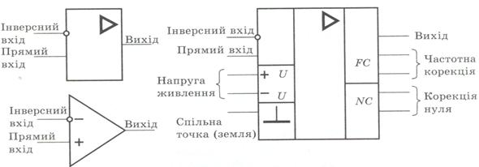
Рис. 4. Умовне позначення ОП
ОП мають великий коефіцієнт підсилення, тому застосовуючи різні види та комбінації зворотного зв’язку (ЗЗ), можна отримати пристрої із заданими характеристиками.
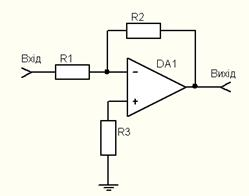
Рис. 5. Інвертуючий підсилювач. З від’ємним паралельним ЗЗ за напругою має коефіцієнт підсилення Кп= -R3/ R1 .
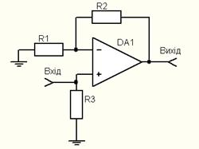
Рис. 6. Неінвертуючий підсилювач. З від’ємним послідовним ЗЗ за напругою не змінює полярність і фазу підсилювального сигналу. Коефіцієнт підсилення дорівнює Кп = 1+R3/ R1
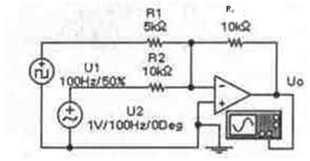
Рис. 7. Суматор. Вихідний сигнал UВИХ пов’язаний з вхідними сигналами UВХ1 , UВХ2 , …, UВХn залежністю Кп =R0 / R1 × UВХ1 + R0 / R2× UВХ2 +… + R0 / Rn × UВХn
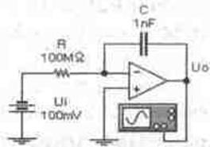
Рис. 8. В інтеграторі вихідна напруга Uвих пов'язана з вхідною напругою Uвх наступними співвідношеннями:
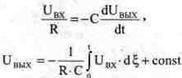
5. Цифрові інтегральні схеми
5.1. Класифікація ЦІС
За функціональними ознаками ЦІС поділяються на такі підгрупи:
– логічні елементи;
– тригери;
– елементи арифметичних пристроїв та ін.
Найчастіше в цифрових пристроях і системах застосовують інтегральні логічні
елементи: НІ, І, АБО, І-НІ, АБО-НІ і т.д.
Промисловістю випускаються різноманітні логічні інтегральні схеми. В залежності від базового типу ключів виділяють такі типи інтегральних логічних схем:
– діодно-транзисторна логіка (ДТЛ);
– резистивно-транзисторна логіка (РТЛ);
– резистивно-ємнісна-транзисторна логіка (РЄТЛ);
– транзисторно-транзисторна логіка (ТТЛ);
– емітерно-пов’язана транзисторна логіка (ЕПТЛ);
– транзисторно-транзисторна логіка з бар’єром Шотки (ТТЛШ);
– логіка на МОН-структурах (МОНЛ);
– логіка на комплементарних МОН-структурах (КМОН);
– інжекційно-інтегральна логіка (ІЛ).
Так само як і аналогові мікросхеми, ЦІС випускаються серіями. Цифрові ІС являють собою ключі, що мають m≥1 входів та n≥1 виходів (рис.8), які можуть бути вироблені на напівпровідникових діодах, біполярних або МДН транзисторах або на їх поєднаннях.
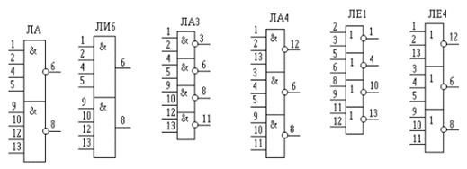
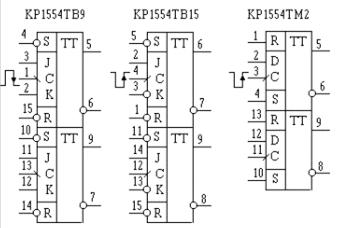
Рис. 9. Цифрові інтегральні мікросхеми
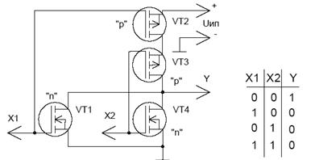
Рис. 10. Приклад реалізації функції АБО-НІ за допомогою МОН транзисторів 6.
Застосування інтегральних мікросхем. Інтегральні мікросхеми застосовуються у всіх областях сучасної техніки де використовують напівпровідникові прилади. Малі габарити і маса, велика надійність, висока стабільність і відтворюваність параметрів, низький рівень власних шумів, мале споживання енергії дозволяють ІМС успішно конкурувати з схемами, зібраними на дискретних елементах.
Особливо велике значення інтегральних мікросхем для подальшого розвитку обчислювальної техніки, автоматики, телевимірювальної техніки, систем управління технологічними процесами в промисловості і сільському господарстві, дротяного, радіо- і телевізійного зв'язку, всіх видів транспорту.
Мікроелектроніка дозволила розширити теоретичні і експериментальнідослідження в космосі, біології, фізиці. Вона застосовується і в автоматах, що працюють на Місяці і Марсі, і при вивченні біострумів в клітках живого організму. Мікроелектроніка дозволила створити приймач-радіопередач, що вміщується в дужці окулярів, телевізор, вбудований в браслет для ручного годинника, кишенькову обчислювальну машину та інше.